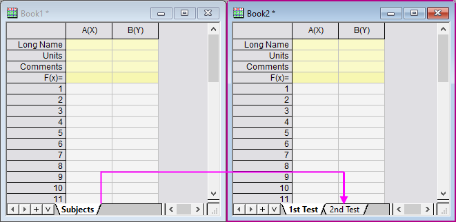

Mit Arbeitsmappen mit mehreren Arbeitsblättern arbeiten
Zusammenfassung
Origin-Arbeitsmappen gleichen Tabellenkalkulationsblättern und können mehrere Arbeitsblätter haben. Die Verwendung von Arbeitsmappen mit mehreren Arbeitsblättern ermöglicht eine bessere Organisation und höhere Informationsdichte.
Was Sie lernen werden
Dieses Tutorial zeigt Ihnen, wie Sie:
- Arbeitsblätter hinzufügen und anordnen.
- Metadaten bearbeiten.
- das Arbeitsblatt mit Hilfe von Trennelementen in Felder aufteilen.
Schritte
Arbeitsblätter hinzufügen und anordnen
- Klicken Sie auf die Schaltfläche Neues Projekt
 in der Symbolleiste Standard.
in der Symbolleiste Standard.
- Klicken Sie mit der rechten Maustaste auf den Reiter Sheet1 und wählen Sie Name und Notizen. Geben Sie für Kurzname Subjekte ein. (Beachten Sie, dass das Blatt Kurznamen und einen Langnamen hat und Sie beides auf dem Reiter anzeigen können, indem Sie mit der rechten Maustaste auf den Reiter klicken und Zu zeigender Blattname wählen. Beachten Sie ebenfalls, dass Sie den Anzeigename des Reiters ändern können -- sowohl Lang als auch Kurz --, indem Sie einfach doppelt auf den Reiter klicken und den neuen Namen eingeben.)
- Klicken Sie auf die Schaltfläche Blatt hinzufügen und ein zweites Blatt mit dem Namen Sheet1 wird zur Mappe hinzugefügt.
- Klicken Sie doppelt auf den neuen Reiter Sheet1 und geben Sie 2. Test im Textfeld ein, das angezeigt wird. (Klicken Sie alternativ mit der rechten Maustaste und verwenden Sie erneut die Option Name und Notizen.)
- Klicken Sie mit der rechten Maustaste auf den Namen 2. Test und wählen Sie Einfügen. Ein neues Blatt mit dem Namen Sheet1 wird zwischen Subjekte und 2. Test eingefügt. Geben Sie dem neuen Blatt den Namen 1. Test.
- Klicken Sie und halten Sie die Maustaste auf dem Blattnamen 1. Test gedrückt, ziehen Sie Maus über den Origin-Arbeitsbereich und lassen Sie sie los. (Das Blatt 1. Test wird jetzt in seiner eigenen Arbeitsmappe angezeigt.)
- Wählen Sie Fenster: Vertikal anordnen, um die Arbeitsmappen nebeneinander anzuordnen.
- Ziehen Sie das Blatt 2. Test zur zweiten Arbeitsmappe und lassen Sie es dort los. Das Blatt 2. Test wird aus der ursprünglichen Arbeitsmappe in die neue Arbeitsmappe verschieben:

- Klicken Sie auf die Schaltfläche Speichern
 . Der Dialog Speichern unter wird geöffnet, da das Projekt noch gespeichert werden muss. Speichern Sie es im Anwenderdateiordner als Multi-Sheet Workbooks.opj
. Der Dialog Speichern unter wird geöffnet, da das Projekt noch gespeichert werden muss. Speichern Sie es im Anwenderdateiordner als Multi-Sheet Workbooks.opj
| Hinweis: Sie können die Blätter auch innerhalb der Arbeitsmappe ziehen und ablegen, um die Reihenfolge zu ändern. Klicken Sie mit der rechten Maustaste auf einen Blattnamen und beachten Sie die zusätzlichen Optionen: Duplizieren ohne Daten, Duplizieren, Löschen und Navigieren. |
Metadaten bearbeiten
Metadaten zu Arbeitsblatt hinzufügen
- Klicken Sie auf die Schaltfläche Neues Projekt in der Symbolleiste Standard.
- Wählen Sie Format: Worksheet im Origin-Menü (oder drücken Sie F4 bzw. klicken Sie doppelt auf den grauen Bereich rechts von den Spalten). Der Dialog Arbeitsblatteigenschaften wird geöffnet.
- Klicken Sie auf der Registerkarte Ansicht auf die Schaltfläche Spaltenbeschriftungszeilen bearbeiten. Der Dialog Spaltenbeschriftungszeilen wird geöffnet.
- Klicken Sie mit der rechten Maustaste auf die Tabelle und wählen Sie Benutzerdefinierte Parameter hinzufügen. Scrollen Sie hinunter. Sie können feststellen, dass die Beschriftung UserDefined hinzugefügt worden ist. Das Kontrollkästchen Zeigen ist standardmäßig aktiviert.
- Klicken Sie doppelt auf den Text UserDefined (oder klicken Sie einmal und drücken Sie dann F2) und überschreiben Sie den Text UserDefined mit Wavelength (nm).
- Klicken Sie in das Feld links von Wavelength (nm), ziehen Sie es in der Liste nach oben und lassen Sie es über Langname fallen. Die Reihenfolge der Zeilen wird folgendermaßen geändert:
- Klicken Sie auf OK, um den Dialog Spaltenbeschriftungszeilen zu schließen.
- Klicken Sie auf die Registerkarte Format im Dialog Arbeitsblatteigenschaften und wählen Sie Langname in der Auswahlliste Anwenden auf. Aktivieren Sie das Kontrollkästchen Rich Text.
- Klicken Sie erneut auf OK, um den Dialog Arbeitsblatteigenschaften zu schließen.
- Markieren Sie die Zeile Kommentare und klicken Sie auf die Schaltfläche Zellen verbinden
 auf der Symbolleiste Stil, um eine Zeile mit einer Zelle zu erstellen.
auf der Symbolleiste Stil, um eine Zeile mit einer Zelle zu erstellen.
- Geben Sie die Werte unten im Kopfbereich der Spalten A und B ein (Wavelength bis Kommentare).
(Hinweis: Sobald das Kontrollkästchen Rich Text für bestimmte Zellen aktiviert ist, aktiviert ein Doppelklick in die Zellen, um sie zu bearbeiten, die Formatschaltflächen  . Diese können dazu verwendet werden, die RichText-Formatierung, wie unten gezeigt, anzuwenden):
. Diese können dazu verwendet werden, die RichText-Formatierung, wie unten gezeigt, anzuwenden):
Metadaten im Arbeitsmappenorganizer anzeigen
- Klicken Sie auf die Schaltfläche Neuer Ordner
 . Öffnen Sie ein leeres Arbeitsblatt. Wählen Sie Hilfe: Ordner öffnen: Sample-Ordner ... im Menü, um den Ordner "Samples" zu öffnen. Öffnen Sie in diesem Ordner den Unterordner Import and Export. Dort befindet sich die Datei S15-125-03.dat. Ziehen Sie diese Datei per Drag&Drop in das leere Arbeitsblatt, um sie zu importieren.
. Öffnen Sie ein leeres Arbeitsblatt. Wählen Sie Hilfe: Ordner öffnen: Sample-Ordner ... im Menü, um den Ordner "Samples" zu öffnen. Öffnen Sie in diesem Ordner den Unterordner Import and Export. Dort befindet sich die Datei S15-125-03.dat. Ziehen Sie diese Datei per Drag&Drop in das leere Arbeitsblatt, um sie zu importieren.
- Klicken Sie auf die Schaltfläche Organizer zeigen/verbergen. Der Arbeitsmappenorganizer wird unten im Arbeitsblatt gezeigt.
- Erweitern Sie den Zweig Importierte Dateien und sehen Sie sich die gespeicherten Metadaten an.
Arbeitsblätter mit Hilfe von Trennelementen in Felder aufteilen
Über Menü aufteilen
- Aktivieren Sie das Arbeitsblatt und markieren Sie eine Zelle.
- Wählen Sie dazu Fenster: Trennen im Origin-Menü.
- Das Arbeits- oder Matrixblatt wird mittels einer horizontalen und einer vertikalen Trennlinie bei der markierten Zelle in 4 Bereiche getrennt. Um das Trennelement in eine neue Position zu verschieben, ziehen Sie es zu der gewünschten Zeile oder Spalte.
- Wählen Sie im Menü Fenster: Aufteilung entfernen, um die Trennzeiger auszublenden.
(Hinweis: Dieser Vorgang ist der gleiche für Arbeits- als auch für Matrixblätter).
Durch Ziehen des Trennelements aufteilen
- Zeigen Sie mit der Maus unten rechts auf das Blatt am unteren Ende der vertikalen Bildlaufleiste (horizontales Trennelement) oder der horizontalen Bildlaufleiste (vertikales Trennelement).
- Wenn der Zeiger zu einem Trennzeiger wird, ziehen Sie ihn auf die gewünschte Position. Es wird ein horizontales oder vertikales Trennelement erstellt.
- Ein Arbeitsblatt mit horizontalem oder vertikalem Trennelement wird wie folgt angezeigt.